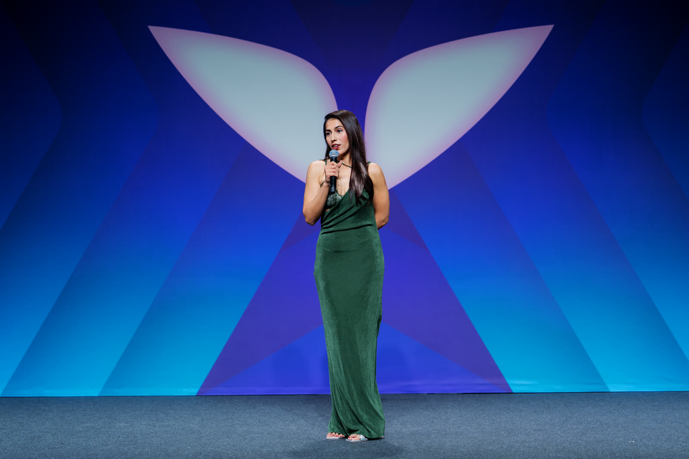
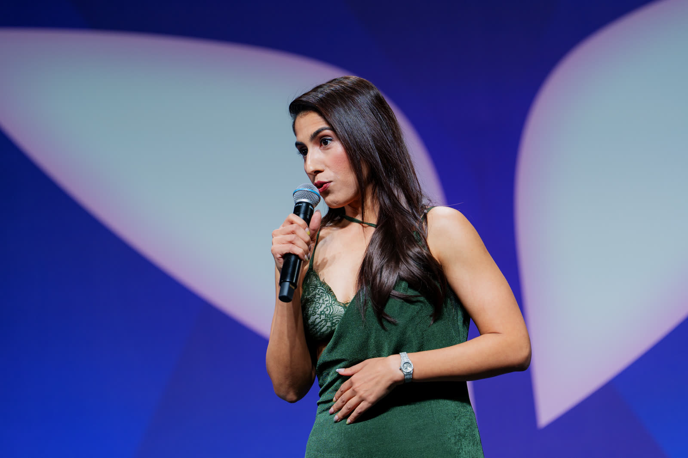

Free guides
Find and fix the leaks in your funnel.
Plain-English guides on why funnels lose money, what good numbers look like, and how to fix what's broken. Written from inside 100+ funnel audits.


5 guides
My funnel loses money and I don't know where
Start here. How to find the leaks and put a dollar figure on them.
- 01Why your funnel is leaking $100K+ a year, and how to find it.12 min read
- 02Sales funnel audit checklist: 25 things to check.3 min read
- 03How to audit your funnel in 5 steps.10 min read
- 04How I audit a funnel: the 5 places money leaks.10 min read
- 05The 5 numbers every funnel audit should check.7 min read

2 guides
My leads cost too much
What a lead should cost, and why yours costs more.

5 guides
People don't show up to my webinar, or don't buy
Show-up, the pitch, and the follow-up after.
- 01Webinar funnel: the full set-up, step by step.3 min read
- 02Why 72% of webinar sign-ups don't show up, and how to fix it.9 min read
- 03Webinar conversion rate benchmarks: the numbers I use.3 min read
- 04The 7-day post-webinar email sequence that recovers 20–40% more revenue.11 min read
- 05Live vs. evergreen webinars: which one makes more money.9 min read

2 guides
My sales video doesn't convert
Video sales letter (VSL) funnels, step by step.

3 guides
My emails don't get opened, or don't sell
Getting to the inbox, and turning a list into sales.

3 guides
People drop off at the sales call or checkout
Close rate, abandoned carts, and what to offer at checkout.

Who writes these
Every guide comes from a real audit.
Marisha Lakhiani helped grow Mindvalley past $100M a year over 8 years. She now audits funnels for $500K–$150M businesses: 100+ funnels audited, $1B+ in combined client revenue.
Free · 60 seconds
Rather check your funnel right now?
The 10-Leak Scorecard is the same first check I run in every audit. Answer ten yes-or-no questions and see your score.